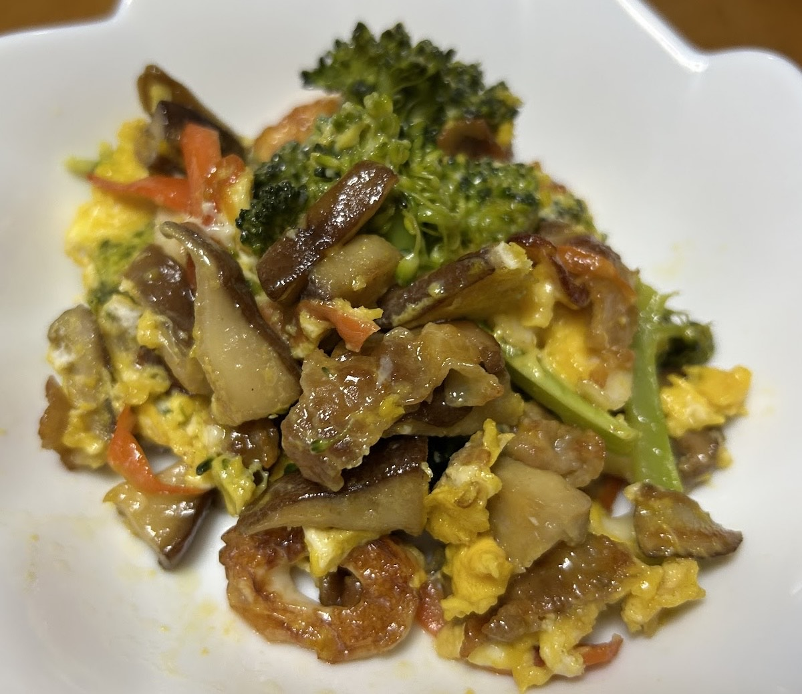

-----きのこの観察日記-----

一日目
・菌床に水を上げてきのこができるようにした
・白い部分や茶色い部分など色が違う場所があった
一言
早くきのこが食べたいなぁ...
空腹度 ★☆☆☆☆
状態
・きのこの量 ☆☆☆☆☆
・きのこの大きさ ☆☆☆☆☆
(右の画像が1日目の画像です)

二日目
・水やりをして菌床の状態を確認した
・白い丸っぽいものが数個生えてきた...
一言
きのこ？っぽい何かができた何かわからないけど多分食べちゃダメなやつ...
早くきのこが食べたいなり...
空腹度 ★★☆☆☆
状態
・きのこの量 ☆☆☆☆☆
・きのこの大きさ ☆☆☆☆☆
(右の画像が2日目の画像です)

三日目
・水やりをした
・数個大きいきのこが生えてきた!
一言
多分きのこ？みたいなんがちょっと生えていた
まだ小さいのがあったからもう少し待とう...
早く食べたい!!!
空腹度 ★★★☆☆
状態
・きのこの量 ★★★★☆
・きのこの大きさ ★★★☆☆
(右の画像が3日目の画像です)

収穫前
・前回からきのこが急にきのこっぽくなった
・きのこが前回よりさらに増えた
一言
やった!ちゃんとしたきのこが沢山できた!
料理をする際にどうなるのか楽しみ!!
沢山のきのこが生えてきた
全員収穫するまであと少し
待ってろよ!うちのきのこ炒め!
空腹度 ★★★★☆
状態
・きのこの量 ★★★★★
・きのこの大きさ ★★★★★
(右の画像が4日目の画像です)

収穫後
一言
収穫するのがとても大変だった
きのこが多すぎてきのこの根本が見えにくかった
空腹度 ★★★★☆
状態
・きのこの量 ★★★★★
・きのこの大きさ ★★★☆☆
(右の画像が収穫後の菌床の画像です)

収穫後のきのこ
一言
きのこを全部収穫した
意外と収穫してみると量が多かった
へへへ、こんなに沢山!
みんなまとめて食べてあげるね!!
空腹度 ★★★★★
状態
・きのこの量 ★★★★★
・きのこの大きさ ★★★★★
(右の画像が収穫後のきのこの画像です)
〜料理の材料〜
用意
材料名 | 個数 |
きのこ | 好きな数 |
卵 | 2個 |
ブロッコリー | 4個 |
ちくわ | 2本 |
豚肉(スライス) | 4枚 |
人参 | 4分の1 |
醤油 | 少し |
塩胡椒 | 少し |
砂糖 | スプーン1杯 |
〜調理法〜
1ちくわを輪切りにする
2ブロッコリーを切る(適当でもいい)
3豚肉を切る(適当でもいい)
4人参を千切りにする
5きのこの茎を切る
6切った状態のきのこを2分の1にする
7卵を割る(すべて)
8フライパンを用意し、火を強火にしてごま油をかける
9豚肉をフライパンに入れる
10火が通ってきたら、椎茸と人参も入れる
11さらに火が通ってきたら、ちくわも入れる
【待ってる間】
12卵(すべて)と砂糖（スプーン一杯分）を混ぜる
【混ぜたあと】
13フライパンにブロッコリーも入れる
14さっき混ぜたものに塩胡椒（少）とうす醤油（少）を入れる
15↑混ぜる
16↑これをフライパンに円を描くように入れる
17フタをして、数分待つ
〜完成〜
〜完成品〜

きのこのイラストの画像
textを作るときに見たサイト
※きのこの画像がなかったため1、2、4、5枚目のきのこの写真は苗さんのを借りています。
許可はもらっています。